WWDC 2023: Build accessible apps with SwiftUI and UIKit
Find hereafter a detailed summary of a video that belongs to a taxonomy of some WWDC footages.
The original video is available on the Apple official website (session 10036).
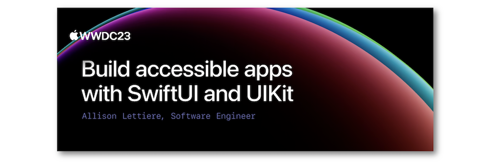
"Discover how advancements in UI frameworks make it easier to build rich, accessible experiences. Find out how technologies like VoiceOver can better interact with your app's interface through accessibility traits and actions. We'll share the latest updates to SwiftUI that help you refine your accessibility experience and show you how to keep accessibility information up-to-date in your UIKit apps."
Hereafter, the underlined elements lead directly to the playback of the WWDC video at the appropriate moment.
Traits #
isToggle #
Introduced in iOS 17, this new trait aims at streamlining the button like items implementation.
Thus, a trigger element becomes perfectly usable by VoiceOver.
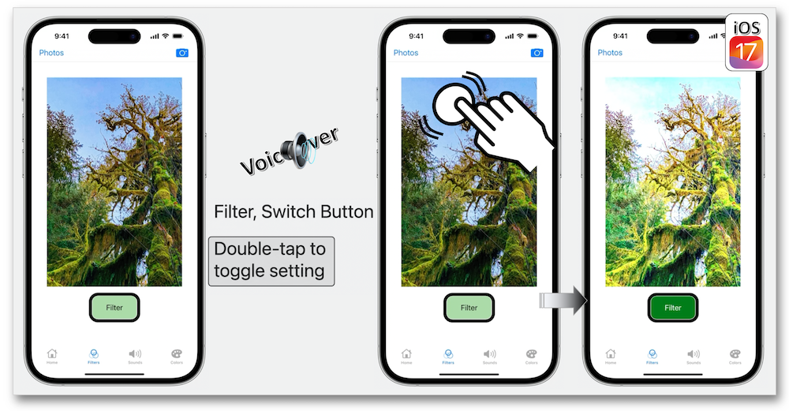
allowsDirectInteraction #
This type property is known for a long time now and is commonly used for representing an element for which interaction can be directly executed.
Two new options have been added in order to improve the user experience:
Code snippets regarding only the first option have been provided to highlight it usage.
Notifications #
This new enumeration type is posted when conveying an announcement to an assistive technology like VoiceOver is needed in specific situations.
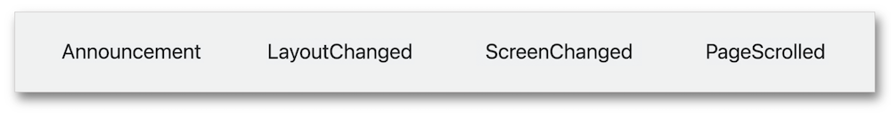
Announcement #
Priority #
In iOS 17, three priority orders are introduced for taking into account the importance of announcements handled in a queue by VoiceOver.
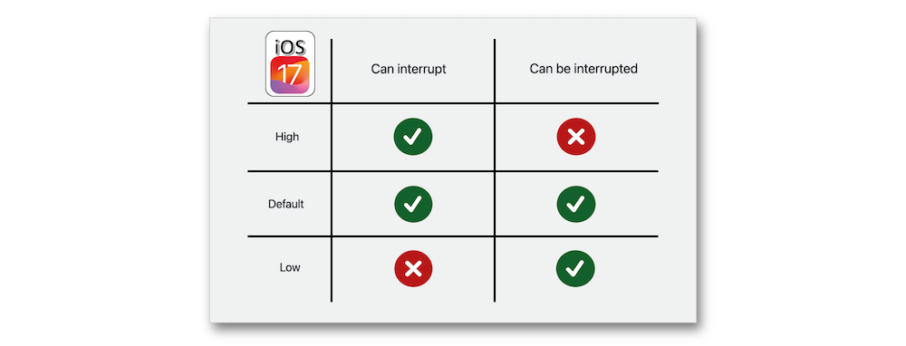
This new system turns out to be efficient when some announcements are posted altogether with different priorities.
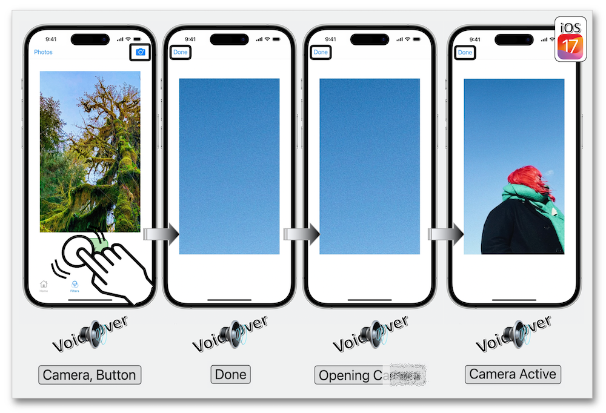
Zoom action #
Through assistive technologies, zooming on UI elements becomes easier thanks to the accessibility zoom action.
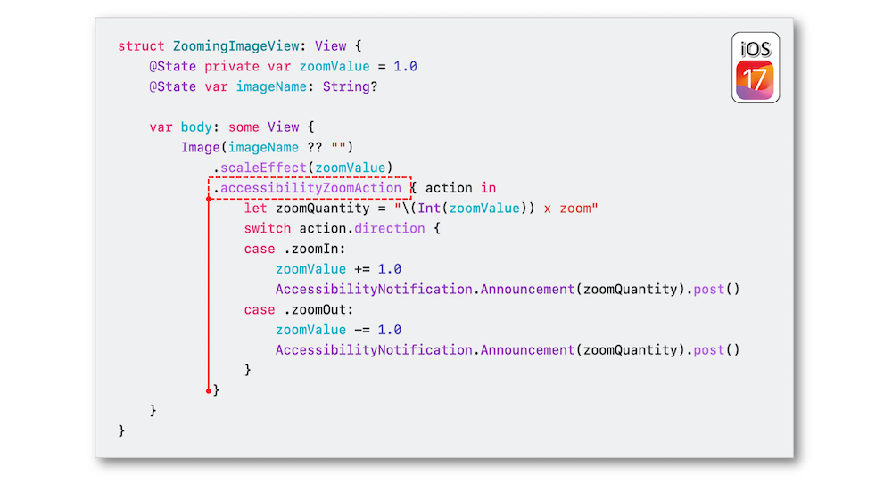
It's crucial to use the supportsZoom type property with UIKit if you want the accessibility element supports zooming on its content.
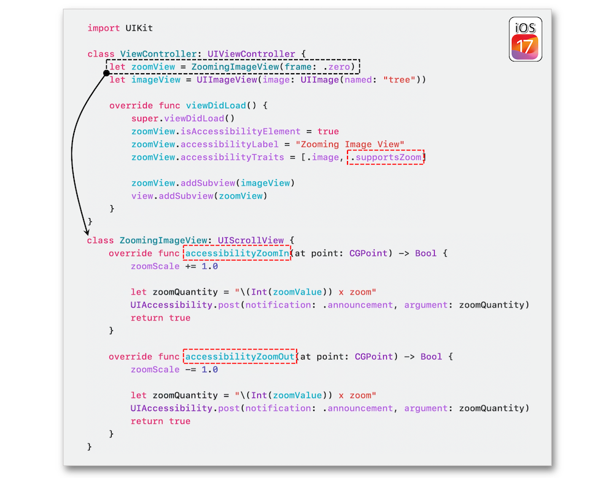
Finally, zooming on a UI element comes down to select the proper item using the rotor and execute the sought action.
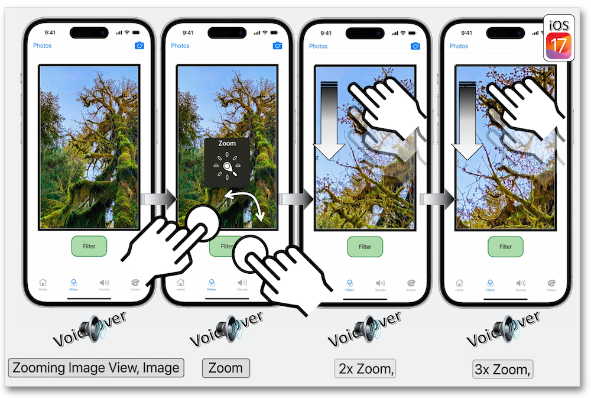
Content shape kind #
This new accessibility content shape kind only impacts the shape of accessibility content with no effects on the hit testing shape by adding specific types to the content shape modifier in SwiftUI.
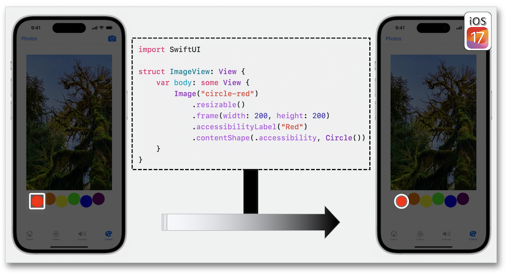
Block based attribute setters #
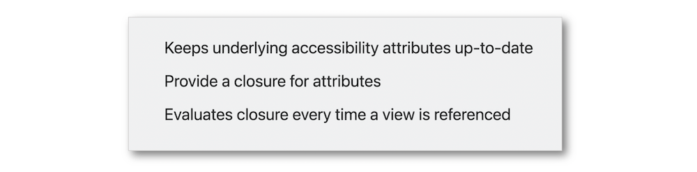
Designed for UIKit, the accessibility block based setters aim at evaluating the closure defining an attribute when necessary instead of storing its value: modularity and automation streamline the update of an accessibility attribute.
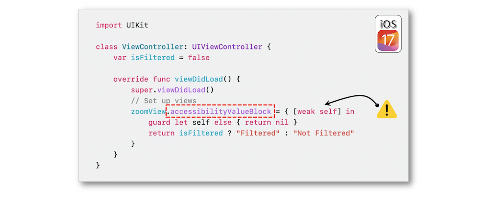
It's important to keep in mind that the closure is re-evaluated every time a view is referenced or directly reached by an assistive technology.
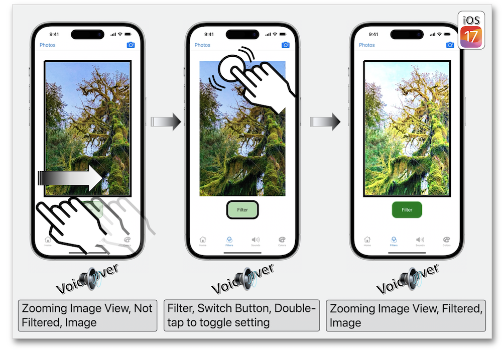